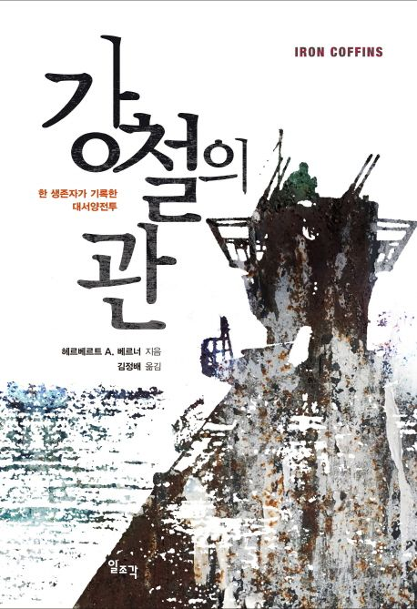

WH
세계사 타임라인
← 사건 목록
1939 — 1945 · FOUR THEATERS
제2차
세계대전

BAND OF BROTHERS
THE PACIFIC
MASTERS OF THE AIR
전선별 타임라인 · 1937~1945
지역 타임라인·여백 길게 누르기: 그 위치에 사건 추가
사건 카드 길게 누르기: 추가·편집·삭제
가로선: 네 지역 공통 날짜 기준
사건 밀도에 따라 날짜 사이 간격 조정
지도: 현대 국경 기준 · 이동 방향 개략 표시 · Natural Earth 1:110m
✎ 편집
✕
＋
−
＋ 사건 추가
✎ 사건 편집
− 사건 삭제
내 타임라인
사건 편집
✕
지역
날짜 (정렬 기준)
종료 날짜 (기간 사건만)
카드에 표시할 날짜
사건명
요약
상세 설명 (선택)
참조 이미지 (선택)
이미지 제거
지도 이동 경로 추가
＋
−
① 출발점 선택
② 도착점 선택
경로 제거
출발지 이름
도착지 이름
지도에서 출발점과 도착점을 차례로 선택하세요.
지도 경로를 켜고 출발점·도착점을 지도에서 차례로 누르면 화살표 지도가 생성됩니다.
취소
저장